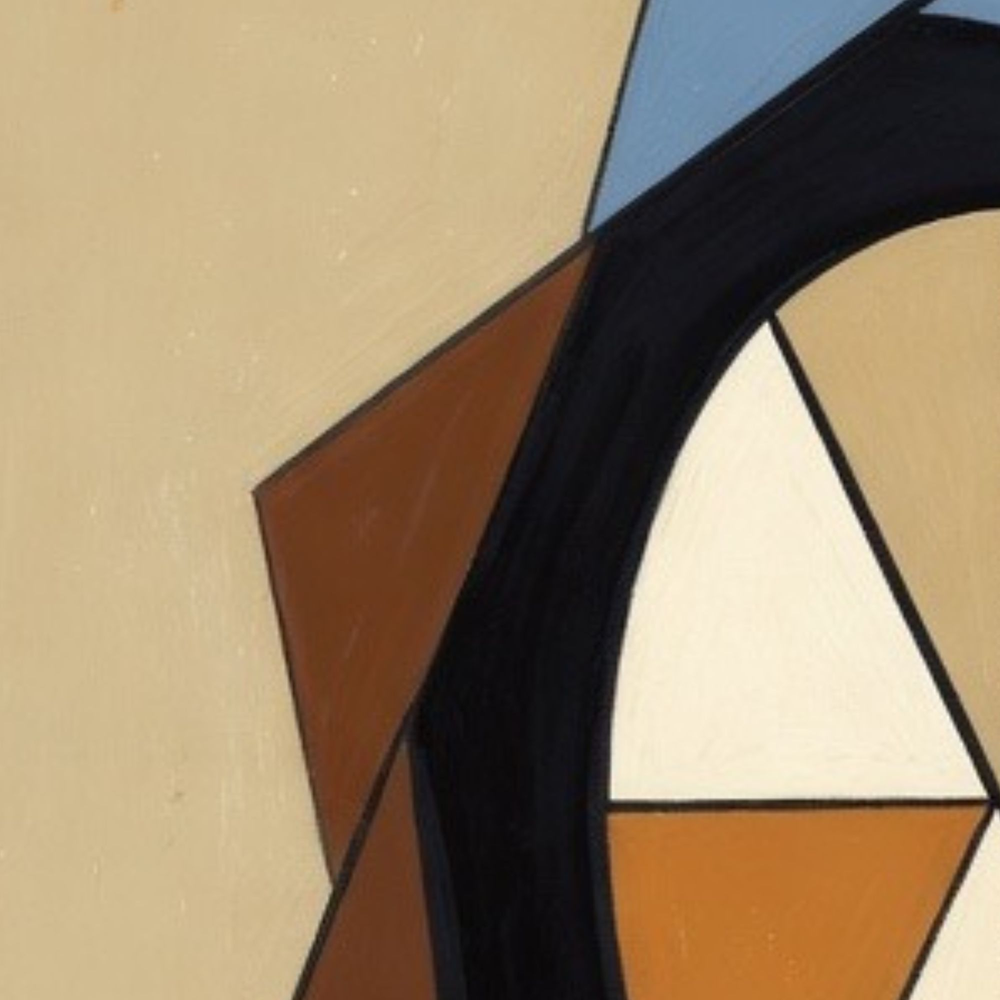
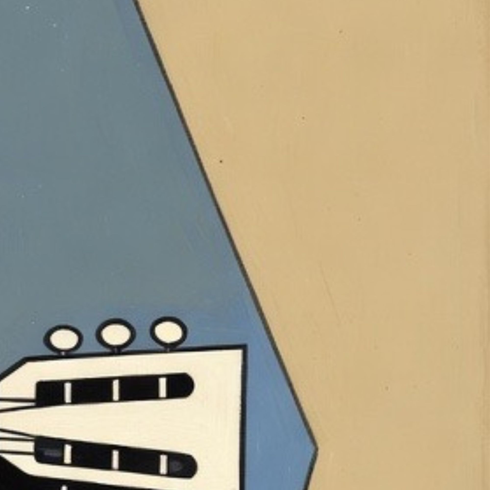
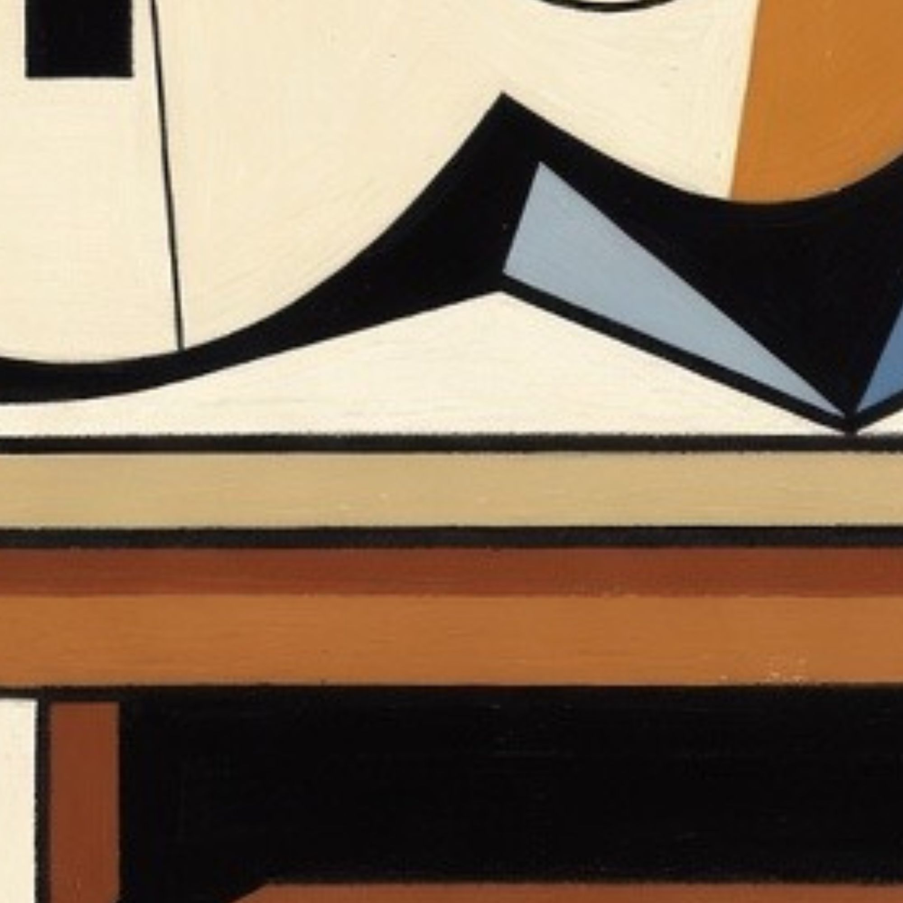
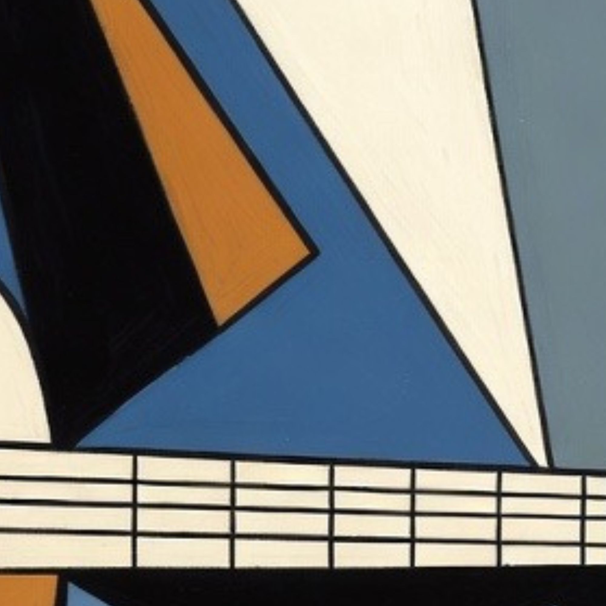
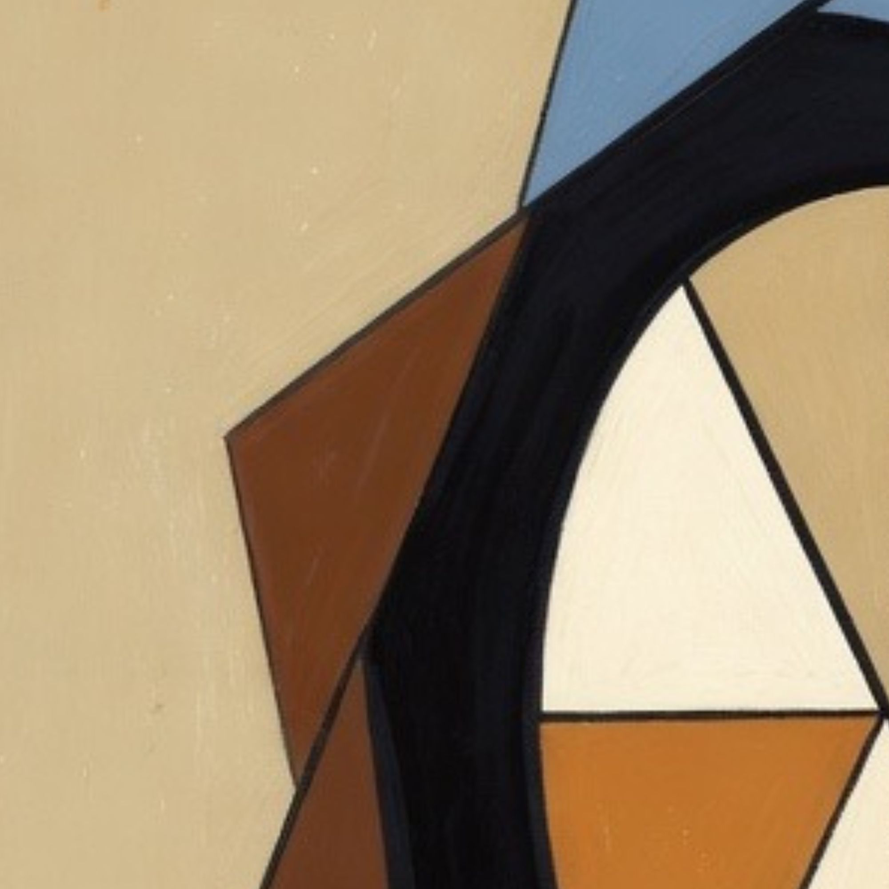
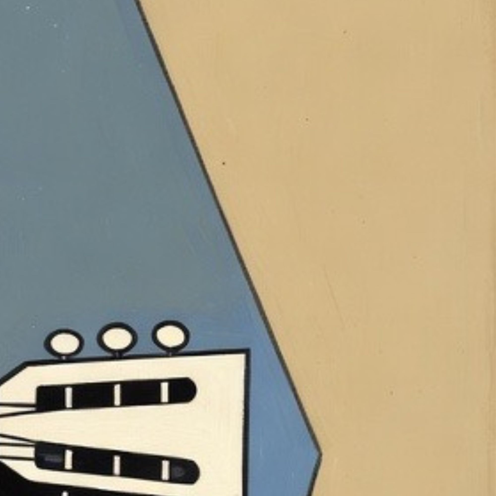
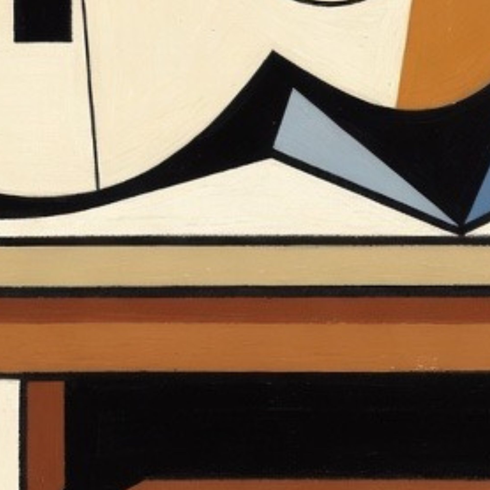
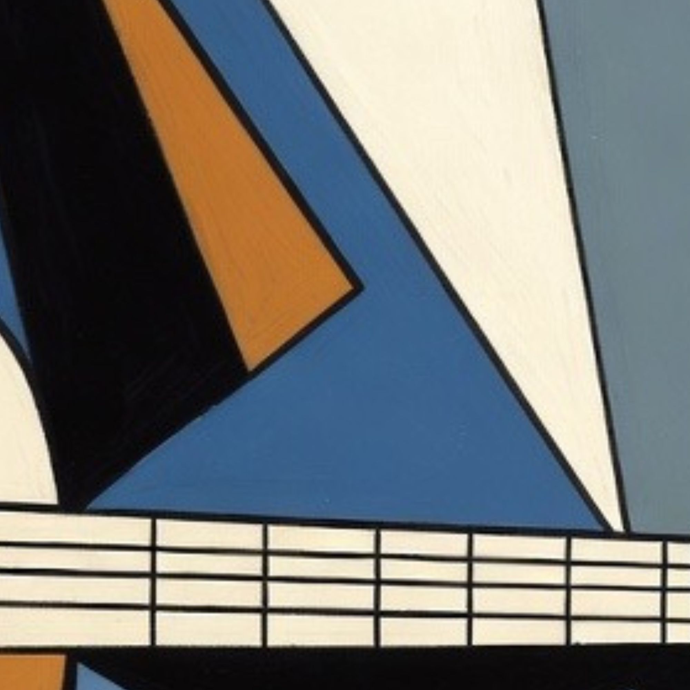

Baúl de los Inventos
¡Bienvenido, pequeño artista, al Baúl de los Inventos!
Aquí puedes ayudarnos a salvar una obra muy especial de Picasso. El cuadro se ha roto en varias
piezas y tu misión es volver a unirlo. Arrastra las piezas hasta colocarlas en el lugar correcto
y reconstruye la imagen poco a poco. ¿Ya reconoces lo que estás formando?
Empezar con el puzzle
Arrastra cada pieza a su sitio. Cuando completes el puzzle, aparecerá la letra secreta.
 







🎉 Genial, has montado la imagen correctamente. ¡La guitarra de Picasso! Aquí tienes la siguiente letra para el acertijo. La letra es: R
Picasso no solo pintaba cuadros. También experimentó con muchas otras formas de crear arte, como dibujos, collages, cerámicas y esculturas. En este baúl se esconden algunas de esas ideas y formas tan especiales que le gustaba explorar. Mira con atención a tu alrededor en la sala del Baúl de los Inventos. ¿Encuentras más formas geométricas? ¿Reconoces la obra que acabas de reconstruir? La guitarra es uno de los objetos más famosos en el cubismo de Picasso y representa su manera de transformar la música y los objetos cotidianos en arte.